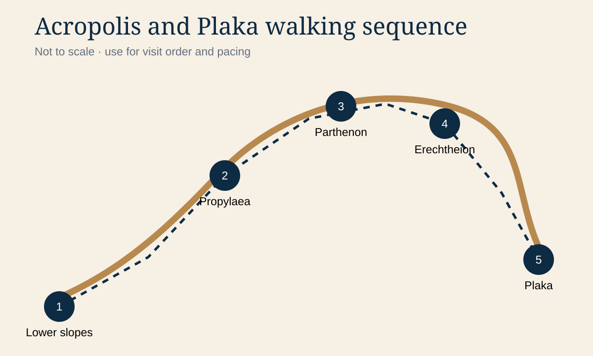
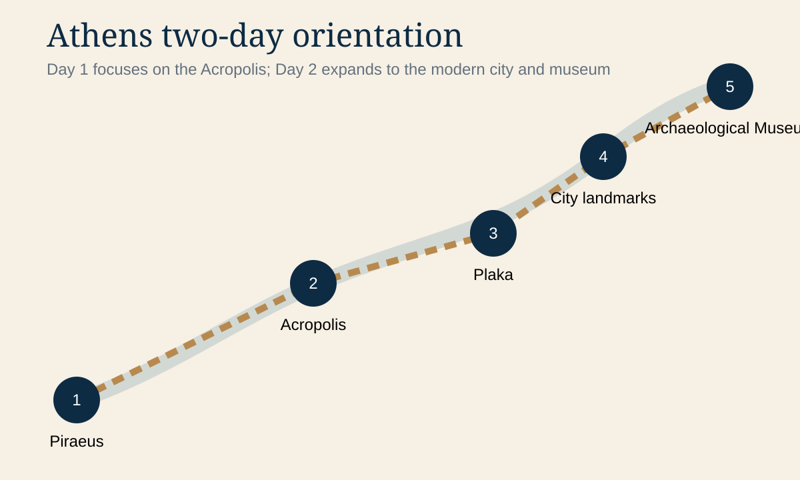

Athens orientation chapters
Athens two-day maps
Tap either schematic to enlarge it. The first emphasizes the Acropolis walking sequence; the second shows the wider relationship between Piraeus, central Athens and the museum.


Day 1
Acropolis ascent, summit monuments, descent and Plaka recovery.
Day 2
Piraeus transfer, panoramic city orientation and National Archaeological Museum.